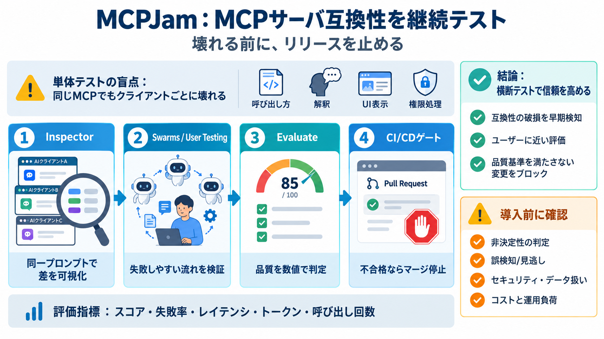

MCPJam vs mcp-use — build vs test your MCP server | MCPJam
Once the server exists, testing it rigorously is a different job. MCPJam adds scored, repeatable evals that quantify how…

MCPJamは、MCP（Model Context Protocol）サーバの信頼性を「複数のAIクライアントで横断的に」検証し、品質基準を満たさない変更をリリース前にブロックする継続テスト基盤です。
同じMCPサーバでも、クライアントごとに「呼び出し方」「解釈」「UI/表示」「権限・セキュリティ処理」が異なり得ます。そのため単体テストだけだと、ユーザー環境での不具合が見えにくくなります。
MCPJamは Inspector → Swarms → User Testing → Evaluate → CI/CD連携 を段階的に組み合わせ、互換性・品質・運用リスクを構造的に潰します。
Inspectorは「同じ台本（同一プロンプト）」を複数のAIクライアントに読み合わせさせ、ツール呼び出し・トレース・表示のズレを“どこで壊れるか”として可視化します。
Inspectorは、MCPサーバ仕様が同じでもクライアント側の解釈や表示が変わる状況で、挙動差を並べて確認できるため原因究明の速度を上げます。
Swarmsはエージェント的にユーザージャーニーを模擬し、User Testingは人の使用感で“想定と実運用のズレ”を埋めます。
Evaluateは、レイテンシ・トークン・呼び出し回数などを含む指標で、クライアントごとに品質基準（評価スコア）を満たすか判定します。
CI/CD連携により、Evalsが合格しない場合はPRマージを止められます。これにより“たまたま通過”のリスクを下げられます。
資料では、クライアント追随、非決定性（ランダム性）、セキュリティ、競合比較、オープンソースなどの導入懸念が“質問”として提示されています。
提示された抜粋だけでは、非決定的テストの具体、誤検知/見逃しの傾向、セキュリティの具体（保持期間や統制範囲）、競合比較の根拠が確定情報として読み取りにくいです。
導入するなら「品質に直結する指標」「誤検知/見逃し傾向」「コスト（クレジット）と運用負荷」「監査・セキュリティ要件への適合」を追加で精査するのが安全です。
MCPJamの要点は、InspectorとEvaluateでクライアント横断の差を見える化し、CI/CDの合否ゲートでリリース事故を構造的に減らすことです。セキュリティや非決定性の扱いは導入前に必ず確認しましょう。
Once the server exists, testing it rigorously is a different job. MCPJam adds scored, repeatable evals that quantify how…
The doctor validates connection, capabilities, and primitives end to end, and compatibility checks return per-host verdi…
Stability, Concurrency, & Performance (8 issues): Issues that affect the responsiveness or reliability of MCP servers an…
Community Tools: 1. mcpjam Inspector - Test with real LLMs 2. MCP Testing Framework - Automated testing framework 3. MC…
The 2026.7.10 release note is short. It lists updated packages for `@modelcontextprotocol/server-filesystem@2026.7.10`, …